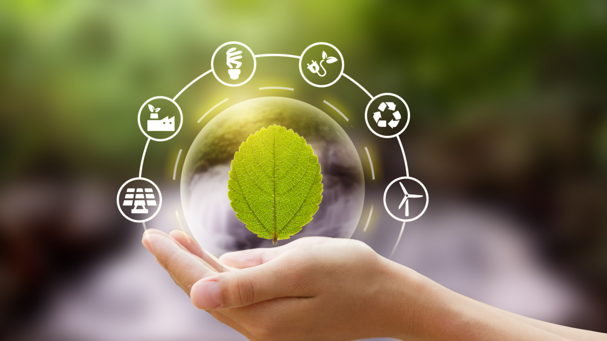

O que é gestão de resíduos e por que é importante?
O que é gestão de resíduos?
É um conjunto de ações que trabalham a forma de uso, coleta, transporte, armazenamento, tratamento, destinação, e demais etapas, dos resíduos de uma empresa ou residência, de forma que essas etapas sejam menos impactantes para o meio ambiente. O processo é feito a partir da análise e do mapeamento da realidade da empresa (ou do local em específico) e, de acordo com o diagnóstico, são estudadas e desenvolvidas formas estratégicas para lidar com cada resíduo, respeitando suas características e respeitando as normas desse processo.
O que são resíduos e quais seus impactos?
Existem tipos diferentes de resíduos e eles podem ser classificados de acordo com sua origem, composição e periculosidade. Os resíduos sólidos urbanos são o resíduo domiciliar, os demais tipos são resíduo comercial, industrial, hospitalar ou de serviços de saúde. Todos esses resíduos, quando não são aproveitados de alguma forma, nem descartados da maneira correta, causam poluição visual do local e, principalmente, podem desencadear a poluição do solo, do lençol freático e do ar, o que prejudica diretamente a saúde de todos. Outro tipo de prejuízo que a má gestão de resíduos pode causar é o financeiro. Empresas podem sofrer multas ou paralisações de suas atividades se não cumprirem com as normas que tratam da questão. Isso porque os geradores são corresponsáveis por eventuais danos ambientais causados por seus resíduos.
O que a Lei diz sobre?
A Lei da Política Nacional de Resíduos (PNRS), Lei nº 12.305/2010, determina que a gestão de resíduos precisa assegurar o reaproveitamento e reciclagem máximos, bem como a redução dos rejeitos, que são os materiais que não apresentam viabilidade técnica e econômica para o processo de reciclagem. Segundo a PNRS, todas as pessoas físicas ou jurídicas que geram resíduos são responsáveis pelo seu correto gerenciamento. É importante conferir toda a legislação vigente dentro do tema.
Quais as vantagens da gestão de resíduos para sua empresa?
Com a identificação das falhas e do direcionamento sobre os processos, a empresa pode eliminar os desperdícios e fazer economia. Além disso, pode lucrar com a venda de materiais recicláveis de boa qualidade, por exemplo.
A empresa que respeita normas de proteção ambiental e tem iniciativas concretas que diminuam ou eliminem os impactos negativos de sua atuação no meio ambiente, demonstra ter responsabilidade social. Além disso, dá indícios de consciência para um desenvolvimento sustentável.
potencial competitivo da organização aumenta com o engajamento na causa ambiental e a empresa cresce de forma saudável, com apoio da sociedade e sem nenhum processo judicial. Isso a coloca em vantagem sobre a concorrência.
Como começar a gestão de resíduos?
A Resíduo Zero está aqui para lhe ajudar! Dê uma olhada nos nossos planos e serviços